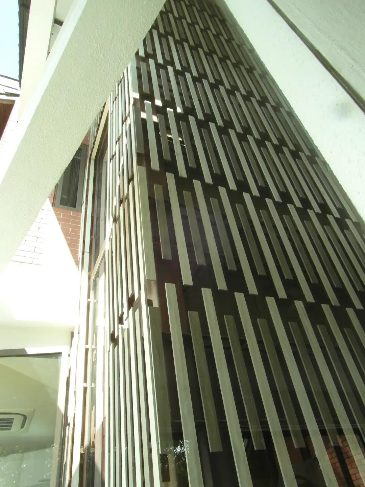
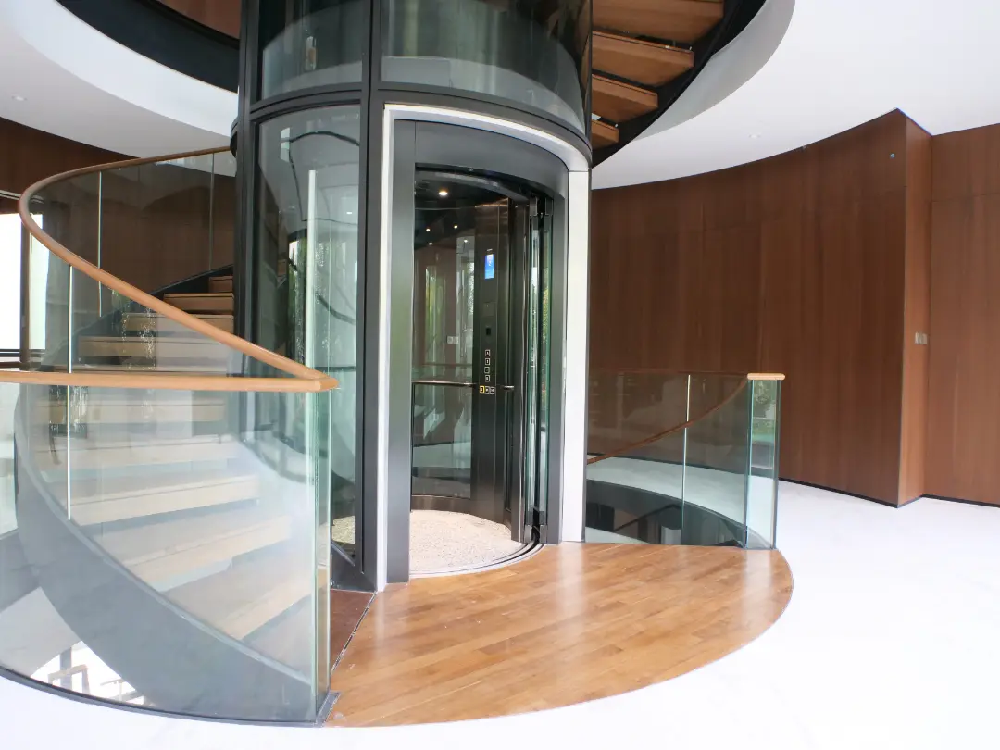
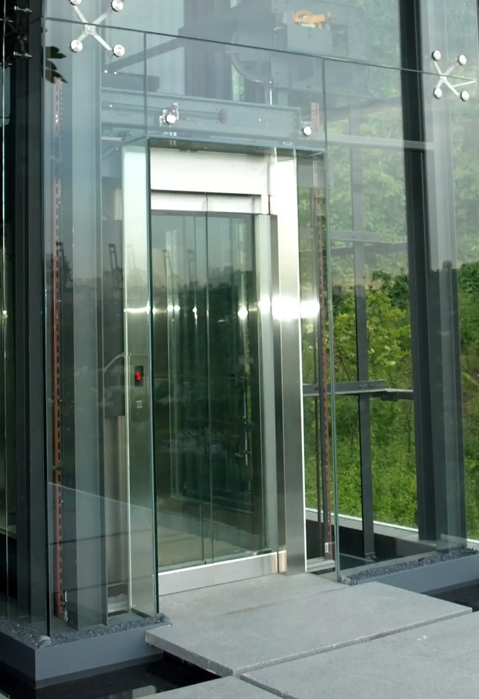
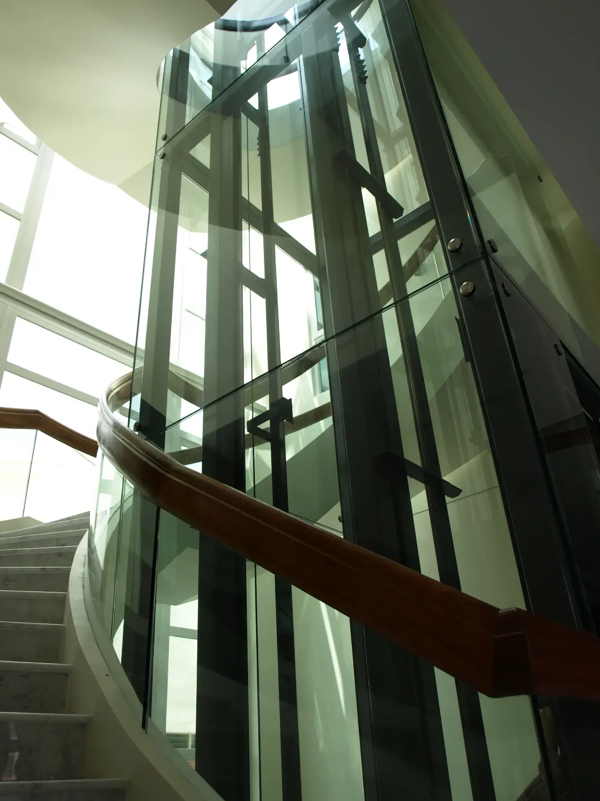
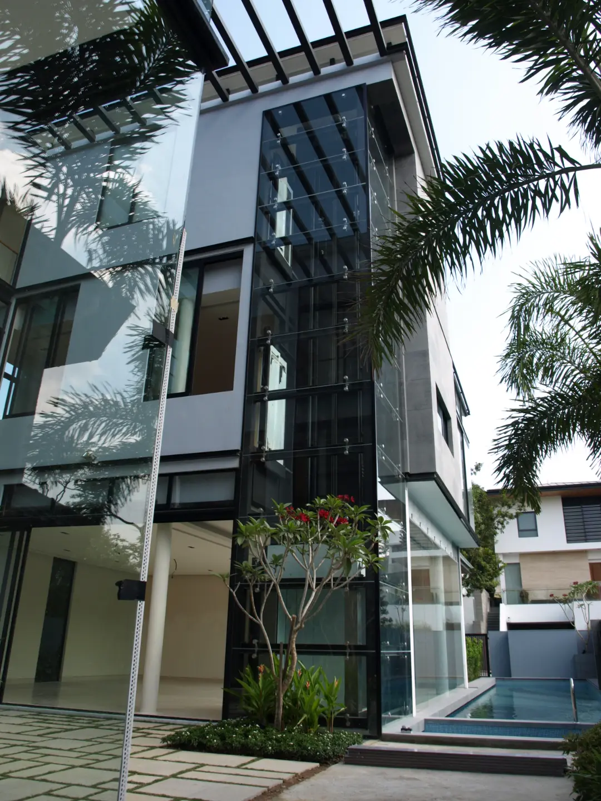
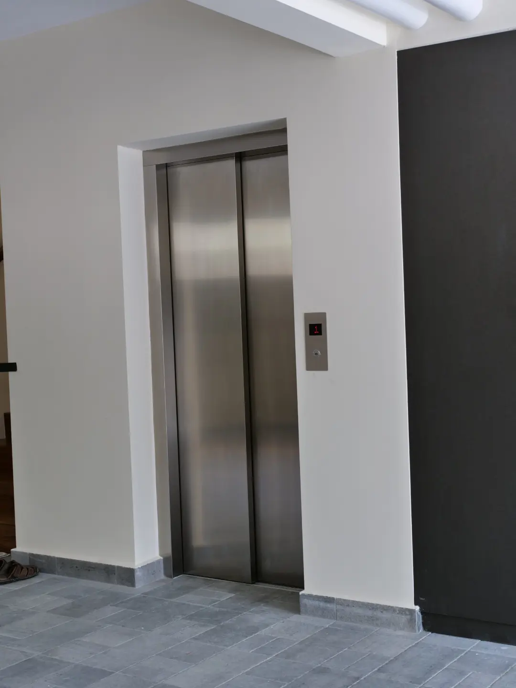
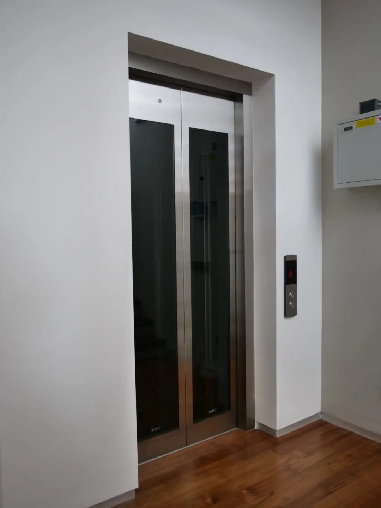

Home lifts家用电梯
For landed houses, new builds and renovations. Planned around the house, installed and serviced by our own team.适用于有地住宅、新建房屋和翻新工程。依房屋格局规划，由我们自己的团队安装和保养。
A lift that looks like part of the architecture.电梯，也是建筑的一部分。
Since 2004 our core work has been premium home lifts. We work closely with homeowners, designers and architects, so the lift, its doors and its interior fit the house rather than sit in it.自2004年以来，高端家用电梯一直是我们的核心业务。我们与屋主、设计师和建筑师紧密合作，让电梯、梯门和内装与房屋融为一体，而不是突兀地摆在那里。
Every lift is site-specific. Tell us the number of floors and where the lift could go, and we'll come and look.每部电梯都按现场情况设计。告诉我们楼层数和电梯可能的位置，我们就上门看看。
- Compact lifts紧凑型电梯For houses where space is tight, including existing homes.适合空间有限的房屋，包括现有住宅。
- Quiet, energy-efficient lifts静音节能电梯Smooth, low-noise rides for homes.运行平稳、噪音低，适合家居。
- Traction lifts曳引式电梯For taller houses and heavier use.适合楼层较高、使用较频繁的房屋。
- Automatic doors自动门Including Fermator glass doors.包括 Fermator 玻璃门。
- Custom interiors定制内装Cabin finishes and themes to match the home.轿厢饰面与风格，和家居相配。

Glass, bubble and circular lifts玻璃、观光及圆形电梯
Panoramic lifts in glass shafts, inside a stairwell or outside the house. Circular hydraulic lifts with curved glass are one of our specialities.安装在玻璃井道内的观光电梯，可设在楼梯井内或屋外。弧形玻璃的液压圆形电梯是我们的专长之一。




Elderly-friendly lifts长者友善电梯
A home lift lets parents and grandparents keep using every floor of the family home. We plan for easy entry, clear controls and doors that give time to step in and out, and we can fit lifts into existing houses as well as new builds.一部家用电梯，让父母和祖父母依然能自在上下家中每一层。我们会考虑方便进出、清楚易用的按键，以及留够时间进出的梯门；新建房屋和现有住宅都可以安装。
Ask us about stairlifts too.也可向我们咨询楼梯升降椅。


What helps when you call来电前可准备的资料
- How many floors the lift should serve.电梯需要停靠几层。
- Whether it's a new build, a renovation or an existing house.是新建房屋、翻新工程，还是现有住宅。
- Where the lift might go, and plans or photos if you have them.电梯可能安装的位置；如有图纸或照片更好。
- Who will use it most, for example an older parent or a wheelchair user.主要使用者是谁，例如年长父母或轮椅使用者。
Tell us about the building and the floors.说说您的房子和楼层。
A call is the quickest start. We'll ask a few questions and arrange a site visit.打个电话是最快的开始。我们会先了解几个问题，再安排上门勘察。